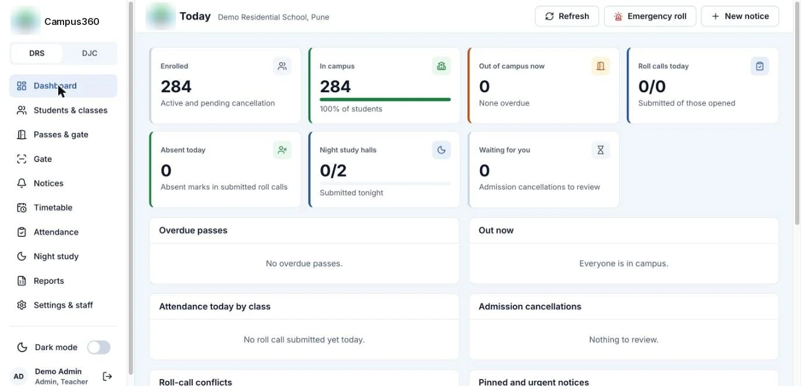

Campus360
Daily operations for residential schools: gate passes, roll calls, night study, student records and notices, in one app for wardens, teachers, the gate and the office.

The school dashboard. School details are hidden.
The problem
A residential school runs on small, constant movements: a student leaves for home, comes back, misses a period, skips night study. Most of it lived on paper registers and phone calls. There was an earlier prototype, but when I audited it, it was a convincing demo, not a working product: an open database, automatic login and hard-coded PINs.
So I used it as a specification, not a foundation, and rebuilt it.
Decisions that shaped it
- Built for a part-time maintainer. A TypeScript monorepo with SQLite, on one free-tier server, with continuous backup to object storage. A school can run it with no hosting budget.
- One React app for every role. The same app runs in the browser and is packaged for Android and iOS.
- Marathi and Hindi from day one. The build fails if any screen is missing a translation.
- The gate works two ways. A shared device at the gate, or the guard's own phone, set per device.
- Excel import in the browser. Schools already have their students in Excel. The file is read in the browser and kept inside a strict JavaScript size budget.
What went wrong
- A QR scan that never finished. On iPhone, a plugin quirk meant a promise never settled, so Scan QR just hung. Found and fixed.
- Lists that went stale. Live lists missed changes until a refresh. A test in CI caught it.
- Real-world timing. The 8 PM summary went out while night study was still on. Small things like this only show up when a real school uses it.
Where it is now
In a pilot at two residential schools run by the same institute.